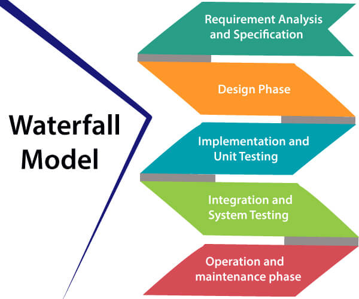

Waterfall Model
Winston Royce tutvustas Veejuga mudelit 1970. aastal. Sellel mudelil on viis faasi: nõuete analüüs ja spetsifikatsioon, disain, rakendamine ja üksiktestimine, integreerimine ja süsteemi testimine ning käitamine ja hooldamine. Neid samme järgitakse alati selle järjestuses ega kattu omavahel. Arendaja peab iga faasi lõpule viima enne järgmise faasi algust. Seda mudelit nimetatakse "Veejuga mudeliks", kuna selle diagrammilised esitused sarnanevad kaskaadiga.
- Nõuete analüüsi ja spetsifikatsiooni faas: selle faasi eesmärk on täpselt mõista kliendi nõudeid ja dokumenteerida need korralikult. Nii klient kui ka tarkvaraarendaja töötavad koos, et dokumenteerida kõik tarkvara funktsioonid, jõudlus ja liidestusnõuded. Kirjeldatakse süsteemi "mida" mitte "kuidas". Selles faasis luuakse suur dokument nimega tarkvara nõude spetsifikatsioon (SRS), mis sisaldab üksikasjalikku kirjeldust sellest, mida süsteem üldises keeles teeb.

- Disainifaas: See faas eesmärk on muuta SRS-is kogutud nõuded sobivaks vormiks, mis võimaldab edasist kodeerimist programmeerimiskeeles. See määratleb üldise tarkvara arhitektuuri koos kõrgtasemel ja üksikasjaliku kujundusega. Kõik see töö dokumenteeritakse tarkvara kujundusdokumendina (SDD).
- Rakendamise ja üksiktestimise faas: Selles faasis viiakse ellu disain. Kui SDD on täielik, kulgeb rakendamise või kodeerimise faas sujuvalt, kuna kogu vajalik teave tarkvaraarendajatele sisaldub SDD-s. Testimise ajal uuritakse ja muudetakse koodi põhjalikult. Algselt testitakse väikseid mooduleid isoleeritult. Pärast seda testitakse neid mooduleid nende omavahelise suhtluse ja vahesalvestatud väljundi voogude kontrollimiseks, kirjutades mõningast lisakoodi.
- Integreerimise ja süsteemi testimise faas: See faas on äärmiselt oluline, kuna lõpp-produkti kvaliteet sõltub läbiviidava testimise tõhususest. Paremad tulemused viivad rahulolevate klientideni, madalamate hoolduskuludeni ja täpsete tulemusteni. Üksiktestimine määrab individuaalsete moodulite tõhususe. Selles faasis testitakse aga mooduleid nende omavahelise suhtluse ja süsteemiga.
- Käitamise ja hoolduse faas: Hooldus on ülesanne, mida iga kasutaja teostab pärast tarkvara tarnimist kliendile, paigaldamist ja kasutuselevõttu.